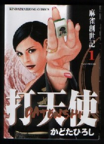
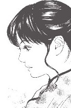

ジャーン！、約１名σ(-_-)の圧倒的な支持により、本年度のコミック大賞はこれに決まり！ 決め手は何と云っても美形の主人公（^-^；
いまのところ、主人公の冬子が麻雀バトルを繰り返しながら夫の仇（かたき）を追い求めるというストーリー。ファンとしては仇をやっつけたところでジエンドなのか、また別な話が展開してまだまだ続くのか、いまから気になる....
それはともかく、この美形の主人公には夏子という二十（はたち）くらいの娘がいる。冬子の娘だけあって、これも美形。

美形だけが夏子の売りではない。夏子はフリー雀荘のメンバーをしているが、腕試しのつもりで麻雀プロテストを受けたら、あっさり合格してしまったというレベル。なにせ、相手の３人の手の内が素通しに近く分ってしまうくらいの凄腕なのだ。
それはいいが、実はこの夏子には、２，３才くらいの子供がいる。どうもできっちゃった子供らしい。ということは、冬子は、もうおばあさん.... そのできっちゃった子供の相手らしいのが、この男。
コミック誌に連載が始まったとき、子供も登場して、この若者との恋愛いざこざみたいなところから物語は始まった。ほいでσ(-_-)は最初、麻雀青春グラフティみたいな話かと思った。
ところが話が進むにつれて、いつの間にか冬子の麻雀バトルが主体になり、若者との恋愛いざこざみたいな話はどこかへ消えてしまった。連載が続くにつれて、当初の意図とストーリーの流れが変わってくるのは、よくある話。そこで（ふ〜ん）とは思っていたが、特に感想はなかった。
ところが単行本になったものを見てみたら、連載当初にあった若者との恋愛いざこざみたいな部分は完全に消滅していて、いきなり冬子の麻雀バトルから話が始まっていた。あらまぁ、σ(-_-)は、この部分も好きだったのに....
|